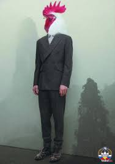
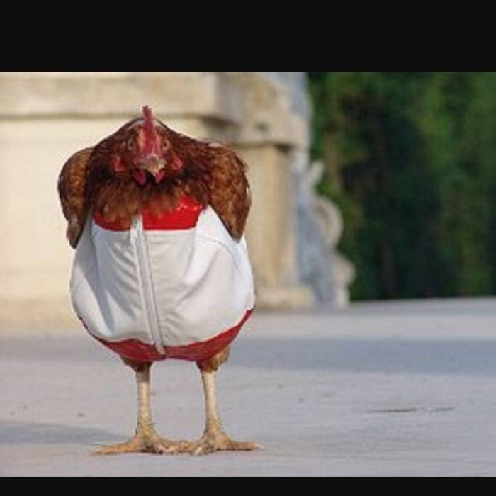

Голодный обморок мАсквы
 Поганая москва красовалась как нафуфыренный петух! Модный мАсковский только и кричит: “а для москвы это не деньги, для Русского человека деньги, а для мАсквы не деньги, найн!”. И провели строгую линию мАсква(поганая и национал социалистическая) и Россия. Которой нафуфыренный петух не приглянулся.
Петух кричал, петух орал! Петух кидался! Но пришла война и петух упал в голодный обморок! Как в инструкции к станку отобранного у нацистской Германии в 1945 году. Видимо у нацистов было чему поучиться, много чего перенять. Как писали в википедии. Военные преступники третьего рейха нашли свой дом в мАскве. В бункере где висит портрет с крысиным усиком. Бежали нацисты на все четыре стороны Мородерить от голодного обморока.
мАсковщина: убогая и никчемная!
Как фашистская Германия потерпела поражение. К обезьяниму подражанию мАсква повторила провал нацистской Германии. В виде расфуфыренного петуха, модного обвешанного нашивками, медалями. Но так форс мажорно рухнувшего в “голодный обморок”. Хотя обморок это был от петушиного страха. Просто чтобы не потерять лицо “даже петушиное”, мАсква решила и тут соврать и выкрутиться!
Нацистская символика символ позора! Все это фатальной очевидности напиоминает подражания мартышки. Одевать не понимая ни малейшего смысла. Что означают эти символы, зачем они нужны? Для чего?
Все это нациская символикаПоганая мАсква иди в суд и скажи там что для мАасквы это не деньги! Расскажи на суде о своём прожиточном минимуме! И о том что все нормально работают, но работать некому одни начальники. Было бы еще кому работать, но: “денег нет, а вы держитесь”. Штрафы, взыскания, пени, налоги, штраф за неуплату штрафа на пеню с неуплаты налога. Незаконная трудовая деятельность! Штраф!
Интернет заблокирован, потому что “голодный обморок мАсквы” ничего показывать Русским. По зомбоящику московский петух весь в нашивках, увешан медалями.
На петушиной медали написано: “за заслуги перед москвой: организации швейной мастерской в полевых условиях на ожидании победы”.
Это похоже на бред шизофреника! О_о но нет, бред шизофреника это диагноз поддающийся лечению. Есть еще министерство “шизофренических цифр”! Их реальность далека от настоящей. И банкомат под руководством “шизофренических цифр” рапортует о том что: “Ваши многоуважаемый персонаж” рубли принимать не буду. Валюту, да пожалуйста! Съем с радостью, а рубли нет, на рубли уже покупать нечего, пока этот фестиваль шизофренической агонии не уперся рогами в следующую стадию: “осеннее обострение”...